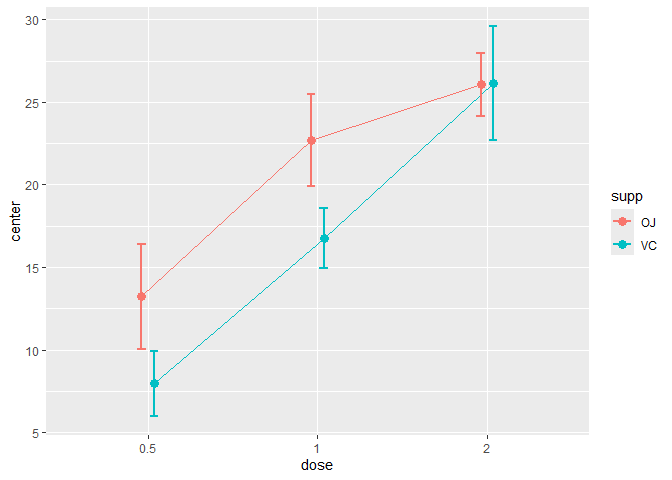
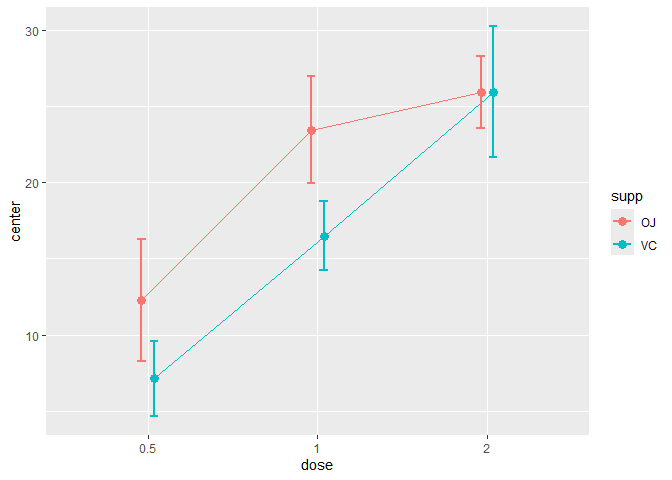

The library superb offers three main functions, superbPlot(), superbData() and GRD(). The purpose of superbPlot() is to provide a plot with summary statistics and correct error bars. With simple adjustments, the error bar are adjusted to the design (within or between), to the purpose (single or pair-wise differences), to the sampling method (simple randomized samples or cluster randomized samples) and to the population size (infinite or of a specific size).
The superbData() function does not generate the plot but returns the summary statistics and the interval boundaries. These can afterwards be output to other plotting environment.
GRD() is used to easily generate random data from any design (within or between) using any population distribution with any parameters, and with various effect sizes. GRD() is useful to test statistical procedures and plotting procedures such as superbPlot().
Installation
The official CRAN version can be installed with
install.packages("superb")
library(superb)The development version can be accessed through GitHub:
devtools::install_github("dcousin3/superb")
library(superb)Examples
This is a simple example illustrating the ToothGrowth (dependent variable is len) of rats as a function of the dose of vitamin and the form of the vitamin supp (pills or juice)
superbPlot(ToothGrowth,
BSFactor = c("dose","supp"),
variables = "len" )
In the above, the default summary statistic, the mean, is used. The error bars are, by default, the 95% confidence intervals. These two choices can be changed with the statistic and the errorbar arguments.
This second example explicitsly indicates to display the median instead of the default mean summary statistics
superbPlot(ToothGrowth,
BSFactor = c("dose","supp"),
variables = "len",
statistic = "median")
As a third example, we illustrate the harmonic means hmedian along with 99.9% confidence intervals using lines:
superbPlot(ToothGrowth,
BSFactor = c("dose","supp"),
variables = "len",
statistic = "hmean",
errorbar = "CI", gamma = 0.999,
plotStyle = "line")
The second function, GRD, can be used to generate random data from designs with various within- and between-subject factors. This example generates scores for 300 simulated participants in a 3 x 2 design with repeated-measures on Days. Only the factor Day is simulated to improve the scores by reducing it:
testdata <- GRD(
RenameDV = "score",
SubjectsPerGroup = 100,
BSFactors = "Difficulty(3)",
WSFactors = "Day(2)",
Population = list(mean = 75,stddev = 12,rho = 0.5),
Effects = list("Day" = slope(-3) )
)
head(testdata)## id Difficulty score.1 score.2
## 1 1 1 79.24015 73.66921
## 2 2 1 90.22441 97.02647
## 3 3 1 83.09390 79.58453
## 4 4 1 81.97316 77.38912
## 5 5 1 75.11573 71.09902
## 6 6 1 92.71133 78.39087The simulated scores are illustrated using jitter dots as well as a violin plot to show the distributions:
superbPlot(testdata,
BSFactor = "Difficulty",
WSFactor = "Day(2)",
variables = c("score.1","score.2"),
plotStyle = "pointjitterviolin",
errorbarParams = list(color = "black"),
pointParams = list( size = 3, color = "black")
)
As seen, superb can be used to illustrate summary statistics but also some characteristics of the raw data.
For more
The complete documentation is available on this site.
A general introduction to the superb framework underlying this library is under consideration at Advances in Methods and Practices in Psychological Sciences.